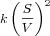
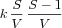

An alternative interpretation is to consider the model as a stochastic process. In this case the reaction kinetics are not considered to describe the rates of change for the concentrations of involved species, but rather as a specification about the probability that a reaction event happens. If a reaction event happens the particle numbers of the involved species are updated according to their stoichiometries. That means particle numbers are always integer numbers and change discretely.
Specifically the value of the kinetic function is interpreted as a so called propensity, that is a differential probability density that a reaction event will happen in the next infinitesimal time interval. However there are subtle differences between reaction rates and reaction propensities. One of those differences that only matters for rather small particle numbers is that e.g. the rate of a second order mass action reaction is described as , while the propensity of the same reaction is . COPASI will apply this kind of corrections automatically. In cases where these corrections have already been done by the modeler explicitly COPASI needs to be told not to apply this correction. This is described in the
general model settings.
Another issue modelers should be aware of is that the rate laws for enzymatic reactions that are derived using the steady state approximation are not necessarily valid for stochastic simulation. In many cases they are, but the underlying assumptions for using them are not exactly the same as for deterministic simulations.